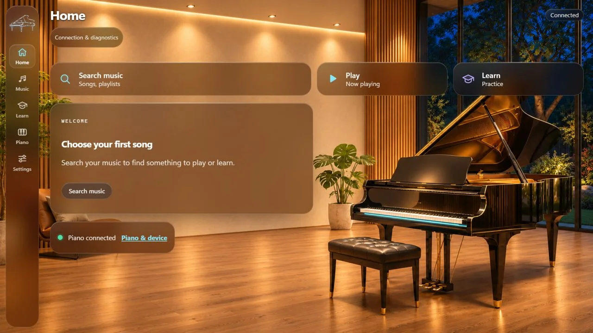

Music
Find your next piece.
Search your MIDI library, build playlists and control playback from your phone, tablet or computer.
Piano studio · MVP
A calm studio for the piano you already love. Listen, learn and practise with PianoCore, powered by your Raspberry Pi.
PianoCore
One familiar studio, from your first note to your next piece.
Music
Search your MIDI library, build playlists and control playback from your phone, tablet or computer.
Learn
Guided practice waits for the right notes. Work through lessons, repeat a passage and follow your progress.
Piano
Sheet music, falling notes and a crystal keyboard share one musical timeline. Cyan for the left hand, lavender for the right.

USB-MIDI · Raspberry Pi
Connect your digital piano to the Raspberry Pi with USB-MIDI. On the same trusted network, open the address of your PianoCore appliance.
PianoCore app
Open the app at your Pi’s HTTPS address. When your browser offers installation, choose Install app. On iPhone or iPad, use Safari → Share → Add to Home Screen.
Installation is a shortcut to your Pi, not a separate piano engine. Your Pi and piano must remain connected and reachable. Internet access is not needed for local playing. No offline music or API cache is added.
A Raspberry Pi running PianoCore, a USB-MIDI piano and a trusted network are required. This is an MVP; physical device acceptance and secure deployment are separate release steps. 3D hands remain experimental.
This page makes no requests to your Pi. Its address stays in this page until you open it; it is not saved. Only your appearance preference is stored in this browser. The local app processes music, practice progress and device state on your Pi. Its control API is intended for a trusted network and must not be exposed to the public internet.